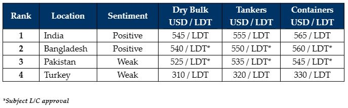

inWeekly Demolition Reports06/02/2023

Another solid showing from sub-continent markets has given encouragement to Ship Owners and Cash Buyers, to start testing potential prices with firm candidates. Indeed, several deals have been concluded off the back of these improved numbers, including one more Capesize bulker at firm levels basis an ‘as is’ Singapore delivery.
Now that the Chinese New Year holidays have concluded, the expected bounce in freight markets has yet to materialize, so an increased number of dry bulk and container units (in particular) have come under serious negotiations for recycling.
Even global currencies are starting to settle against the U.S. Dollar and steel plate prices have found a relatively steady place, as demand and a firm buying interest is increasing across all markets, even for Pakistan and Bangladesh, where it is often not feasible to do deals there due to the ongoing L/C restrictions.
Talks on the much-needed IMF loans are still ongoing in each country, to bring back some essential liquidity and U.S. Dollars needed to establish fresh Letters of Credit so that domestic recyclers can start to import vessels / steel once again.
In Bangladesh, there are certain / select end buyers who can open L/Cs with private financing (away from the government bank restrictions) or with Usance L/Cs, but this still provides only limited options to Cash Buyers / Owners with vessels to sell.
Finally, Turkey too continues its stable streak with firming steel prices and a currency that’s found a new plateau to rest on, resulting in vessel prices firming an additional USD 10/MT this week.
In other news, the Brazilian government owned warship Sao Paolo has tragically and unnecessarily been scuttled off the coast of Brazil with a plethora of hazardous materials on board, all while NGOs and outside observers (with no real knowledge of ship recycling) keep putting pressure on various countries (including Turkey) to deny entry of vessels for recycling.
For week 5 of 2023, GMS demo rankings / pricing for the week are as below.

📄 Download PDF: Ship-recycling-market-insight-week-05-2023-Solid-Showings.pdfSource: GMS,Inc. ,https://www.gmsinc.net/gms_new/index.php/web